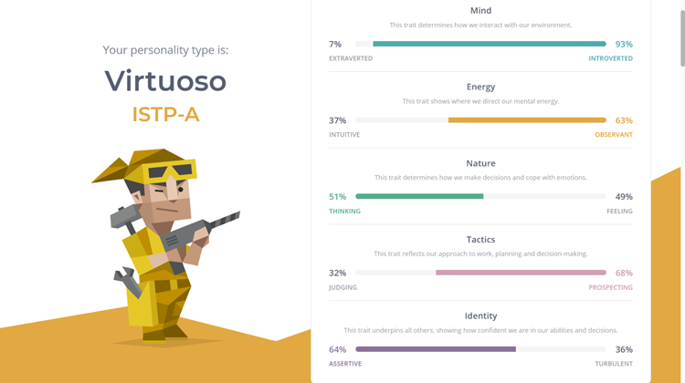
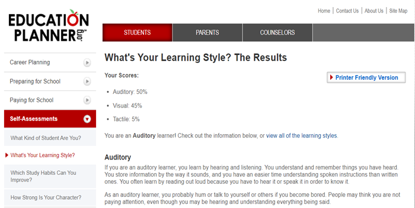
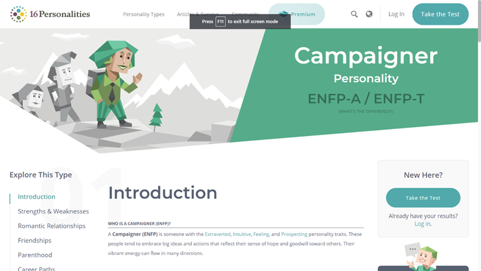

PERSONAL INFO
- Khôi Hoàng, student ID: s3854233. Of Vietnamese background and fluent in both English and Vietnamese.
Love for coding as a whole, is a bit of an audiophile.
- Huy Mai, student ID: s3836278. Also Vietnamese.
Passion for game design and development, able to produce music.
- Dũng Nguyễn, student ID: s3812648. Vietnamese. Love of movies and sports.
Inspired by his brother to pursue IT
Team Profile
-
Khoi:
-
Myers-Briggs:
-

-
Learning style test
-

-
Perceptual skills test
-

-
Dung:
-
Myers-Briggs:
-

-
Learning style test
-
Visual learner
-
Big Five Personality test:
-
Openess - 77%; Conscientiousness - 40%; Extraversion - 65%; Agreeableness - 73%; Neuroticism - 58%
-
Huy:
-
Myers-Briggs:
-
INTP personality type
-
Introvert or extrovert:
-
A public introvert and a private extrovert.
-
Learning style test:
-
Auditory: 30%; Visual: 20%; Tactile: 50%
IDEAL JOB
Data Analyst vs AI Developer vs Game Developer
The most obvious common ground for these 3 Jobs is their familiarity with AI technology.
Wherein Data Analysts and AI developers build, iterate upon, and improve machine learning models and algorithms, Game developers implement AIs into their games
(This is done regardless of game genre and studio)
to automate many gameplay elements and features, or in “NPCs”.
Another similarity, albeit less apparent, is how all three of these occupations work alongside/with data –
Game development hinges on player-driven data, with most triple A (AAA) studios building games according to market statistics
(Sales of games based on genre, feature, business models, etc.…)
and online games being updated based on gameplay stats and player feedback; Data analysts use data to implement machine learning for specific purposes, whilst AI developers using data as inference for their AI algorithms.
The biggest distinction between the above jobs is their purpose, AI devs and Data analyst may share a common goal in working with machine learning, but Game devs are creating a product for entertainment/consumption.
The nature of game development also requires a lot more communication and team-work (Many different positions ranging from Level Design, Networking, Programmer, Modelling, etc.) than you would as a Data Analyst or AI Developer.
Our career plans all share a common path - finish our bachelors and attain as many useful/relevant skills for the duration of our studies as possible.
And hopefully amass enough experience and create an expansive portfolio, enough to qualify for our Ideal Jobs.